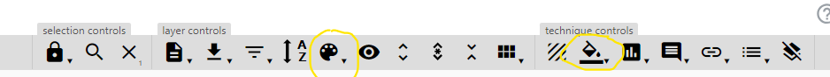
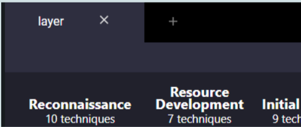
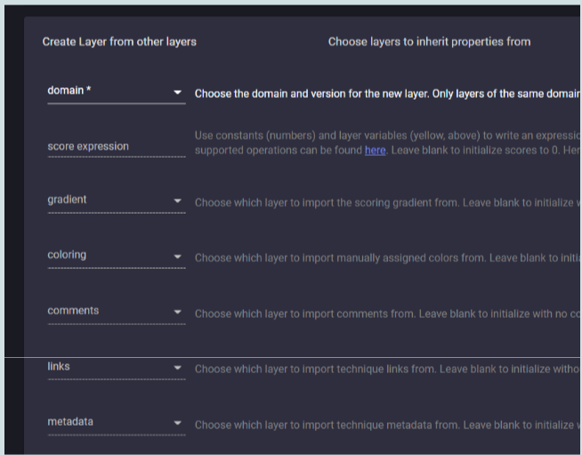

MITRE ATT&CK NAVIGATOR.
We will use the hosted webapp. The webapp sources are public domain. The webapp could be hosted locally, which may be useful if one did not want to disclose any analysis to anyone.
We will assess the defensive usage of multi-factor authentication (MFA) against two recent and highly relevant campaigns:
- CUBA ransomware campaign: CISA alert
- HIVE ransomware campaign: CISA alert
The help button of NAVIGATOR seems quite useful.
Demo and report
In the lectures I pointed out that some "analysis" of "some manually constructed layers" may be enough for the demo and report required for the exam. Such a simple demo is very unlikely to be assigned a grade increment.
Idea for a more complex activity (which would likely receive a significant grade increment): development of a tool that:
- Takes a technical report or blog post as input (perhaps its URL);
- Extracts the mentioned ATT&CK techniques (for example by means of a regular expression that matches technique identifiers)
- Construct a Navigator layer that summarizes the corresponding report (layers are internally represented in
json);
Automated activities of this kind, with a much higher level of scale and complexity, are often used by specialized companies.
Layers
A layer is a set of annotated techniques, where an annotation can consist of one or more of: background color; textual description, possibly including an URL; numerical score and more.
Such a set may describe the techniques relevant for a specific attack campaign, for a specific software, for a specific data source, for a specific mitigation, as well as any combination of them.
One can instruct the NAVIGATOR webapp to:
- start from an empty layer;
- load a layer from a file or from an URL;
- construct a layer by combining the numerical scores assigned to techniques of other layers already loaded in the webapp.
- select all the techniques relevant to a specific category of the ATT&CK framework (threat group, software, mitigation and alike; magnifying glass button in the "selection controls" section).

After working on a layer, one can save the resulting layer in a file for later usage or distribution.
Each technique is linked to the corresponding page of the MITRE ATT&CK framework, that describes the technique along with detections, mitigations and alike. The link can be found in the menu that appears by clicking the right button on the technique.
Understanding background colors
Background colors can be assigned to techniques in two ways:
- Individually, to each mouse-selected(s) technique (color button in the "technique controls" section).
- Globally, based on the numerical score possibly assigned to a technique (gradient color button in the "layer controls" section).
The gradient color button allows selecting:
- a minimum and maximum score values;
- a number of intervals;
- a color for each interval;
This way, one can grasp quickly how scores are distributed across techniques.
Criterion 1 takes priority over criterion 2: if a background color has been chosen for a technique, then the gradient color based on the score will not be applied to that technique.
Lab
Load existing layers
To save time, the layers required for this activity have been prepared already and can be uploaded in the webapp (read the Warning section below!).
- Create new layer from existing CUBA layer (CUBA json)
- Create new layer from existing HIVE layer (HIVE json)
- Create new layer from existing MFA layer (MFA json)
Each layer consists of a set of techniques annotated with a background color and without any score.
After loading a layer, click on the "expand annotated sub-techniques" button in the layer controls section. You will see that some layers use sub-techniques that would not be visible without such an expansion
Define scores for each layer
In each layer, assign a score to each technique selected in that layer. This can be done with the score button in the “technique controls” section. You may want to select multiple techniques (mouse+shift) and then assign the same score to all the selected techniques.
In general, one could assign different scores to different techniques. In this exercise we will assign the same score to all the selected techniques in a given layer:
- CUBA 5
- HIVE 5
- MFA 20
Note that numerical scores are not immediately visible: to see the score of a specific technique, one has to select that technique with the mouse and the click on the score button in the "technique controls" section.
Create new layer from the three existing layers
Create a new tab (press +).

Then select “create layer from other layers” and in the “score expression” field define a sum of the three previously loaded layers (probably it will be “a + b + c” and probably you will need to insert a space in between operands and operators).
Do not insert anything in the other fields (in particular, do not define any gradient or coloring at this stage).

At this point you will have a new layer in which each technique will be automatically given a score that is the sum of the score of the three other layers.
With the values suggested in the previous section there will be these possible scores:
- 5 Technique used by one attack campaign and not mitigated by MFA
- 10 Technique used by both attack campaigns and not mitigated by MFA
- 20 Technique not used by any of the attack campaigns and mitigated by MFA
- 25 Technique used by one attack campaign and mitigated by MFA
- 30 Technique used by both attack campaign and mitigated by MFA
Define a gradient color in the newly created layer
Define a gradient color criterion that allows understanding the scores of interest quickly :
- 5 or 10: used in the attack campaigns but uncovered by MFA
- 20: covered by MFA but not used in the attack campaigns
- 25 or 30: used in the attack campaigns and covered by MFA
Save layer for later use (buttons in “layer controls” section; excel or json, the latter can be loaded in the tool later).
ANALYZE RESULTS
You will see that MFA does provide some mitigation against several of the techniques used in the considered attack campaigns but not all.
- Consider the uncovered technique in “Command and Control”.
- Locate that technique in https://attack.mitre.org/matrices/enterprise/.
- Read the suggested detections and mitigations carefully.
- For each of them
- Do you know it?
- Is it implemented in our environment?
- If yes, to which degree?
- Consider the uncovered technique in “Privilege Escalation”.
- Repeat the above analysis.
Further activities, if you want…
- Create and save a layer for describing the Uber breach (shown in the slides).
- Analyze effectiveness of MFA for this specific breach.
- Analyze effectiveness of MFA for this breach, CUBA and HIVE together.
ATT&CK CALCULATOR
Objective: Grasp an idea of which mitigations and detections could be most needed in our environment.
We will use the hosted webapp. The webapp sources are not public domain.
- Select the input combination that, in your opinion, is most relevant to our environment (or to your view of our environment).
- Generate results (results can be downloaded in json, but the format is not recognized by the Navigator).
- Consider the 3 detections and 3 mitigations that are suggested as being most relevant. Read their definitions carefully.
- For each of them:
- Do you know it?
- Is it implemented in our environment?
- If yes, to which degree?